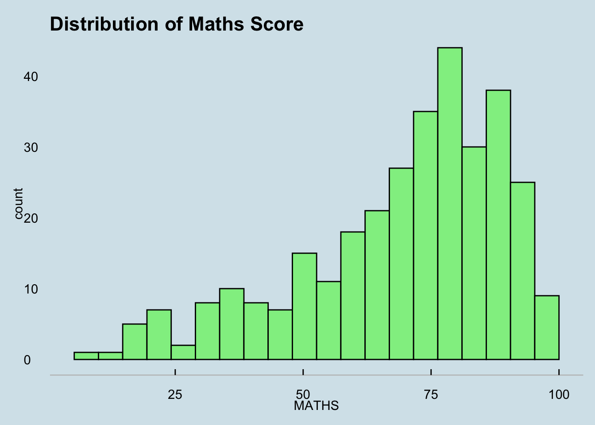
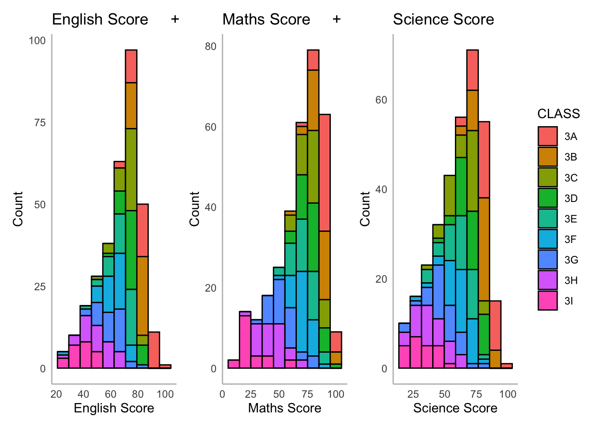
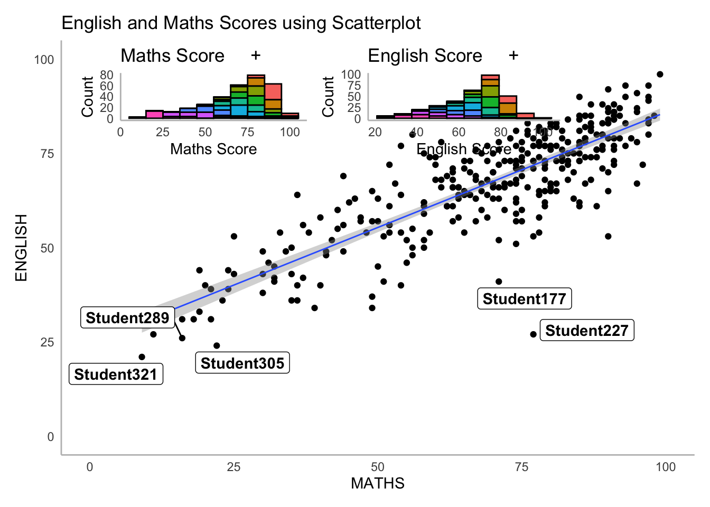

pacman::p_load(ggrepel, patchwork, ggthemes, hrbrthemes, tidyverse) Extensions of ggplot2

1. Learning Objectives
- Annotate or label data using
ggrepelpackage - Create publication quality figure by using
ggthemesandhrbrthemespackages - Plot composite figure to combine ggplot2 graphs using
patchworkpackage
2. Load Packages
Beside tidyverse, the following R packages will be used:
ggrepelprovides geoms to repel overlapping text labelsggthemesprovides themes, geoms, and scaleshrbrthemesprovides typography-centric themes and theme componentspatchworkprepares composite figures
3. Import Data
exam_data is a year end examination grades of a cohort of Primary 3 students from a local school.
The output shows a total of seven attributes; four of them are categorical attributes (ID, CLASS, GENDER and RACE) and the other three are continuous attributes (MATHS, ENGLISH and SCIENCE).
exam_data <- read.csv("data/Exam_data.csv")
summary(exam_data) ID CLASS GENDER RACE
Length:322 Length:322 Length:322 Length:322
Class :character Class :character Class :character Class :character
Mode :character Mode :character Mode :character Mode :character
ENGLISH MATHS SCIENCE
Min. :21.00 Min. : 9.00 Min. :15.00
1st Qu.:59.00 1st Qu.:58.00 1st Qu.:49.25
Median :70.00 Median :74.00 Median :65.00
Mean :67.18 Mean :69.33 Mean :61.16
3rd Qu.:78.00 3rd Qu.:85.00 3rd Qu.:74.75
Max. :96.00 Max. :99.00 Max. :96.00 4 Annotate Data using ggrepel
ggrepel is an extension of ggplot2 which provides geoms to repel overlapping text labels, geom_label_repel() and geom_text_repel(). Text labels repel away from each other, away from data points, and away from edges of the plotting area.
Note
We replace geom_label() by geom_label_repel().
plot1 <- ggplot(data = exam_data,
aes(x = MATHS, y = ENGLISH)) +
geom_point() +
geom_smooth(method = lm,
size = 0.5) +
geom_label(aes(label = ID),
hjust = 0.5,
vjust = -0.5) +
coord_cartesian(xlim = c(0,100),
ylim = c(0,100)) +
ggtitle("Scatterplot Without Label Repel")+
theme_minimal()+
theme(legend.position = "none",
panel.grid.major = element_blank(),
panel.grid.minor = element_blank(),
axis.line = element_line(colour = "grey"))Warning: Using `size` aesthetic for lines was deprecated in ggplot2 3.4.0.
ℹ Please use `linewidth` instead.plot2 <- ggplot(data = exam_data,
aes(x = MATHS, y = ENGLISH)) +
geom_point() +
geom_smooth(method = lm,
size = 0.5) +
geom_label_repel(aes(label = ID),
hjust = 0.5,
vjust = -0.5,
max.overlaps = 20) +
coord_cartesian(xlim = c(0,100),
ylim = c(0,100)) +
ggtitle("Scatterplot with Label Repel")+
theme_minimal()+
theme(legend.position = "none",
panel.grid.major = element_blank(),
panel.grid.minor = element_blank(),
axis.line = element_line(colour = "grey"))
gridExtra::grid.arrange(plot1, plot2, ncol = 2)`geom_smooth()` using formula = 'y ~ x'
`geom_smooth()` using formula = 'y ~ x'Warning: ggrepel: 316 unlabeled data points (too many overlaps). Consider
increasing max.overlaps
Warning
Where there are limited space for large number of labels, ggrepel can contain max.overlaps = to indicate the number of labels displayed on the plot.
5. Customize Plot Themes
ggplot2 comes with eight built-in themes, namely theme_gray(), theme_bw(), theme_classic(), theme_dark(), theme_light(), theme_linedraw(), theme_minimal(), and theme_void().
theme_gray(): A grey background and white gridlinestheme_bw(): The classic dark-on-light ggplot2 themetheme_linedraw(): A theme with black lines of various widths on white backgroundtheme_light(): A theme with light grey lines and axestheme_dark(): The dark background with similar line sizes.theme_minimal(): A minimalistic theme with no background annotations.theme_classic(): A classic-looking theme with x and y axis lines and no gridlines.theme_void(): A completely empty theme.theme_test(): A theme for visual unit tests
::: panel-tabset
built-in themes
plot3 <- ggplot(data = exam_data,
aes(x = MATHS))+
geom_histogram(bins=20,
boundary = 100,
color="black",
fill="lightgreen")+
ggtitle("theme_light")+
theme_light()+
theme(legend.position = "none",
panel.grid.major = element_blank(),
panel.grid.minor = element_blank(),
axis.line = element_line(colour = "grey"))
plot4 <- ggplot(data = exam_data,
aes(x = MATHS))+
geom_histogram(bins=20,
boundary = 100,
color="black",
fill="lightgreen")+
ggtitle("theme_dark")+
theme_dark()+
theme(legend.position = "none",
panel.grid.major = element_blank(),
panel.grid.minor = element_blank(),
axis.line = element_line(colour = "grey"))
gridExtra::grid.arrange(plot3, plot4, ncol = 2)
ggtheme
ggthemes provides ggplot2 themes that replicate the look of plots by Edward Tufte, Stephen Few, Fivethirtyeight, The Economist, ‘Stata’, ‘Excel’, and The Wall Street Journal, among others.
ggplot(data = exam_data,
aes(x = MATHS))+
geom_histogram(bins=20,
boundary = 100,
color="black",
fill="lightgreen")+
ggtitle("Distribution of Maths Score")+
theme_economist()+
theme(legend.position = "none",
panel.grid.major = element_blank(),
panel.grid.minor = element_blank(),
axis.line = element_line(colour = "grey"))
hrbthems
hrbrthemes package provides a base theme that focuses on typographic elements, including where various labels are placed as well as the fonts that are used.
Themes:
theme_ft_rc()theme_ipsum()theme_ipsum_ps()theme_ipsum_rc()theme_ipsum_tw()theme_modern_rc()
theme_ipsum() where ‘ipsum’ is Latin for ’precise.
Warning
Error in theme_ipsum() : could not find function “theme_ipsum”
Either Arial Narrow or Roboto Condensed fonts are required to use these themes.
Please use hrbrthemes::import_roboto_condensed() to install Roboto Condensed and if Arial Narrow is not on your system, please see https://bit.ly/arialnarrow
Why Arial Narrow?
Arial Narrow is generally installed by default or readily available on any modern system. Also, it is a condensed font with solid default kerning pairs and geometric numbers.
ggplot(data = exam_data,
aes(x = MATHS))+
geom_histogram(bins=20,
boundary = 100,
color="black",
fill="lightgreen")+
ggtitle("Distribution of Maths Score")+
theme(legend.position = "none",
panel.grid.major = element_blank(),
panel.grid.minor = element_blank(),
axis.line = element_line(colour = "grey"))+
theme_ipsum(axis_title_size = 18,
base_size = 15,
grid = "Y")axis_title_size argument is used to increase the font size of the axis title to 18, base_size argument is used to increase the default axis label to 15, and grid argument is used to remove the x-axis grid lines. :::
6 Create Composite Graphics
Patchwork package has a very simple syntax where we can create layouts super easily. Here’s the general syntax that combines:
“+” operator creates a horizontal layout.
“()” create a subplot group.
“|” operator to stack two ggplot2 graphs,
“/” operator to place the plots beside each other,
“()” operator the define the sequence of the plotting.
This example uses + to combine multiple graphs.
maths <- ggplot(data = exam_data,
aes(x = MATHS, fill = CLASS))+
geom_histogram(colour = "black", bins = 10)+
labs(title = "Maths Score +", x = "Maths Score", y = "Count")+
theme_minimal()+
theme(legend.position = "none",
panel.grid.major = element_blank(),
panel.grid.minor = element_blank(),
axis.line = element_line(colour = "grey"))
english <- ggplot(data = exam_data,
aes(x = ENGLISH, fill = CLASS))+
geom_histogram(colour = "black", bins = 10)+
labs(title = "English Score +", x = "English Score", y = "Count")+
theme_minimal()+
theme(legend.position = "none",
panel.grid.major = element_blank(),
panel.grid.minor = element_blank(),
axis.line = element_line(colour = "grey"))
science <- ggplot(data = exam_data,
aes(x = SCIENCE, fill = CLASS))+
geom_histogram(colour = "black", bins = 10)+
labs(title = "Science Score", x = "Science Score", y = "Count")+
theme_minimal()+
theme(panel.grid.major = element_blank(),
panel.grid.minor = element_blank(),
axis.line = element_line(colour = "grey"))
english + maths + science
() determine the sequence of two plots and / places the plot below.
(english + maths) / sciencelibrary(gridExtra)
Attaching package: 'gridExtra'The following object is masked from 'package:dplyr':
combinegrid.arrange(english, maths, science, ncol = 2)main <- ggplot(data = exam_data,
aes(x = MATHS,
y = ENGLISH)) +
geom_point() +
geom_smooth(method = lm,
size = 0.5) +
geom_label_repel(aes(label = ID),
fontface = "bold") +
coord_cartesian(xlim=c(0,100),
ylim=c(0,100)) +
ggtitle("English and Maths Scores using Scatterplot")+
theme_minimal()+
theme(legend.position = "none",
panel.grid.major = element_blank(),
panel.grid.minor = element_blank(),
axis.line = element_line(colour = "grey"))
main +
inset_element(maths, left = 0.02, bottom = 0.7, right = 0.4, top = 1) +
inset_element(english, left = 0.4, bottom = 0.7, right = 0.8, top = 1)`geom_smooth()` using formula = 'y ~ x'Warning: ggrepel: 317 unlabeled data points (too many overlaps). Consider
increasing max.overlaps
plot <- (english / maths) | main
plot & theme_economist()`geom_smooth()` using formula = 'y ~ x'Warning: ggrepel: 320 unlabeled data points (too many overlaps). Consider
increasing max.overlaps7 References
- hrbrthemes: https://hrbrmstr.github.io/hrbrthemes/